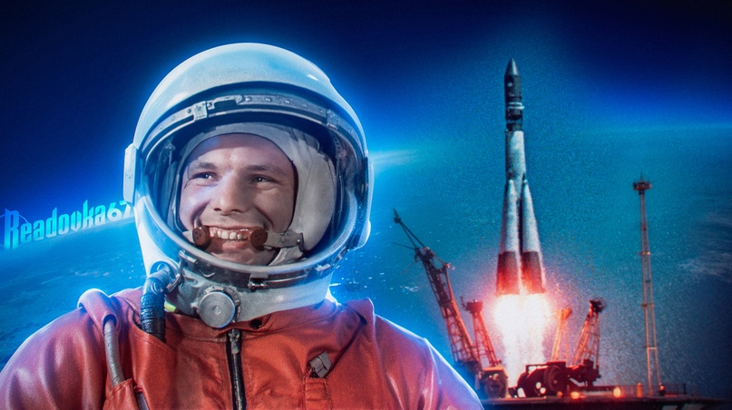

ПЕРВЫЙ В КОСМОСЕ
12 апреля 1961 состоялся первый в мире полёт человека в космос.
Ракетой-носителем «Восток» выведен на орбиту первый пилотируемый космический корабль
«Восток» с летчиком-космонавтом Юрием Гагариным
Юрий Алексеевич Гагарин (9 марта 1934 — 27 марта 1968) — лётчик-космонавт СССР, Герой Советского Союза, кавалер высших знаков отличия ряда государств, почётный гражданин многих российских и зарубежных городов.
12 апреля 1961 года Юрий Гагарин стал первым человеком в мировой истории, совершившим полёт в космическое пространство.
